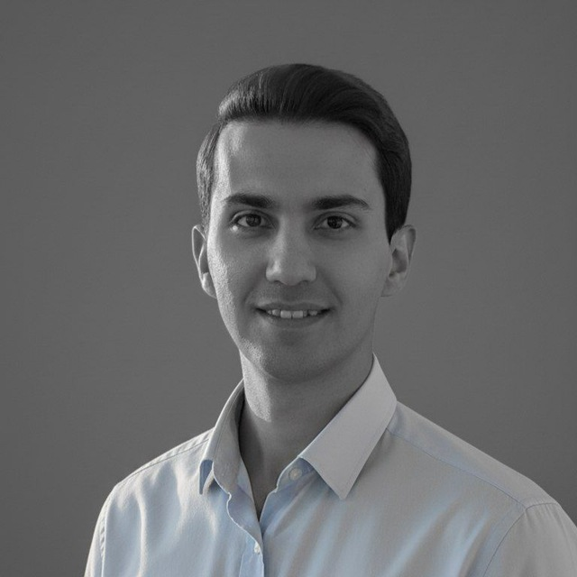

سلام، من
علاقهمند به یادگیری ماشین و کاربردهای هوش مصنوعی در حوزه پزشکی. در حال حاضر مشغول تکمیل پایاننامه کارشناسی ارشد هستم.

مسیر تحصیلی من کمی متفاوت بوده است. سال ۱۳۹۳ تحصیل در رشته مهندسی پزشکی را در دانشگاه صنعتی همدان آغاز کردم،.
سال ۱۳۹۸ وارد مقطع کارشناسی مهندسی عمران در دانشگاه بوعلی سینا شدم و سال ۱۴۰۲ فارغالتحصیل شدم. سپس با علاقه به حوزه هوش مصنوعی، مقطع کارشناسی ارشد مهندسی هوش مصنوعی را در همان دانشگاه آغاز کردم و در حال حاضر در مرحله نهایی پایاننامه هستم.
به عنوان مهندس هوش مصنوعی، روی ساخت سیستمهایی کار میکنم که از داده یاد میگیرند و تصمیمهای آگاهانه میگیرند. علاقهمند به یادگیری ماشین، شبکههای عصبی و مدلهای زبانی بزرگ (LLM) هستم. همچنین به علوم اعصاب و ارتباط بین هوش مصنوعی و شناخت انسان علاقه دارم و دوست دارم در آینده روی این حوزه بیشتر کار کنم.
در حال تکمیل پایاننامه با عنوان:
«تخمین کسر جهشی بطن چپ در اکوکاردیوگرافی: چارچوبی بر پایه تقطیر دانش با مکانیزم توجه زمانی و استنتاج مبتنی بر شواهد»
علاقهمند به درک ارتباط بین شبکههای عصبی مصنوعی و مغز انسان و چگونگی الهامگیری از علوم اعصاب برای ساخت مدلهای بهتر.
مجذوب نحوه کار مدلهای زبانی و پتانسیل آنها در تغییر ارتباطات و درک زبان هستم.
علاقه دائمی به خواندن کتاب و یادگیری موضوعات جدید.
گوش دادن به موسیقی و تماشای فیلم از علایق همیشگی من است.
علاقه به گفتگوهای عمیق درباره موضوعات مختلف، از علم تا فلسفه و زندگی.
اگر علاقهمند به گفتگو یا همکاری هستید، خوشحال میشوم از شما بشنوم.
ارسال ایمیل